Inhalt Index DeskTop Bronstein

 Funktionentheorie Funktionen einer komplexen Veränderlichen Konforme Abbildung Einfachste konforme Abbildungen
Funktionentheorie Funktionen einer komplexen Veränderlichen Konforme Abbildung Einfachste konforme Abbildungen


Die konforme Abbildung
| 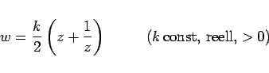 | (14.16a) |
kann mit Hilfe der Polarkoordinatendarstellung 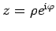 und Trennung von Real- und Imaginärteil gemäß (14.8) zu
| 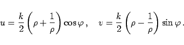 | (14.16b) |
umgeformt werden. Kreise mit  der z-Ebene (s. linke Abbildung) gehen in die konfokalen Ellipsen
der z-Ebene (s. linke Abbildung) gehen in die konfokalen Ellipsen
| 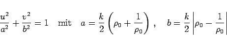 | (14.16c) |
der w-Ebene (s. rechte Abbildung) über.
Brennpunkte sind die Punkte 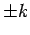 der reellen Achse. Für den Einheitskreis mit r = r0 = 1 entartet die Ellipse der w-Ebene in die zweifach durchlaufene Strecke (-k, +k) der reellen Achse. Sowohl das Innere als auch das Äußere des Einheitskreises wird auf die volle w-Ebene mit dem Schnitt (-k, +k) abgebildet, so daß die Umkehrfunktion zweideutig ist:
| 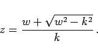 | (14.16d) |
Die Geraden 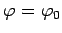 der z-Ebene (s. die folgende linke Abbildung) werden in die konfokalen Hyperbeln
| 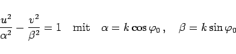 | (14.16e) |
mit den Brennpunkten abgebildet (s. rechte Abbildung).
Die den Koordinatenhalbachsen der z-Ebene 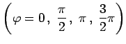 entsprechenden Hyperbeln arten in die Achse u = 0 und in die hin und zurück durchlaufenen Intervalle 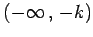 und 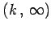 der reellen Achse aus.